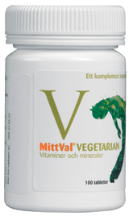

Denna hemsida är designad för att hjälpa dig som nybörjar vegan, vegitarian eller likande då det i början kan vara svårt och förvirrande. Under de olika rubrikerna står det specifik information som kan var viktig för att börja med vegetarisk kost.
Information
Vegansk kost
Vegankost innehåller inga produkter från djurriket och är den striktaste formen av vegetarisk kosthållning. I sin mest ortodoxa form innebär det även att man utesluter honung (från bin) och gelatin (vanligt i godis, mediciner och kosttillskott). Att vara vegan är ett beslut med stora näringsmässiga konsekvenser. Man måste ha god inblick i hur man skall kompensera för näringsbortfallet som följer när man utesluter kött, fågel, fisk, skaldjur, ägg, mjölk, ost och smör och ändå erhålla en fullvärdig och näringsrik kost.
Vegetarisk kost
Att vara vegetarian är ett beslut med konsekvenser. Det handlar inte, som många tror, bara om att utesluta vissa livsmedelskategorier. Det handlar minst lika mycket om att välja till. Vad skall du ersätta med istället om du väljer bort kött och fisk för att det skall bli en fullvärdig, näringsrik kost?
Laktovegetarian
När man är laktovegetarian äter man mejeriprodukter, men inte ägg.
Ovo-vegitarian
Ovo-vegetarianer äter ägg, men inte några andra mejeriprodukter.
Lakto-ovo-vegitarian
När man är lakto-ovo-vegetarian äter man både ägg och mejeriprodukter.
Brister
Det finns några viktiga ämen som man får brist på med en vegetarisk kosthållning.
De viktigaste ämnena du bör hålla reda på är:
- Järn
- Vitamin B12
- D-vitamin
- Kalcium
- Selen
- Jod
- Zink
- Protein
- Omega-3
Recept
Här nedanför finns det listat tre bra och pålitliga hemsidor för veganska recept.
Förslag
Filmer
Några filmer som är informerande och intressanta att titta på är:
- Earthlings (2005)
- Live and let live (2013)
- Cowspiracy (2014)
- What the health (2017)
- The Game Changers (2018)
Annat
Här finns det några andra sidor för recept och några instagramsidor:
- Icas veganska recept
- Köket.se
- veganskmatlada (instagram)
- vegomagasinet (instagram)
- fridasvegobak (instagram)
- valjvego (instagram)